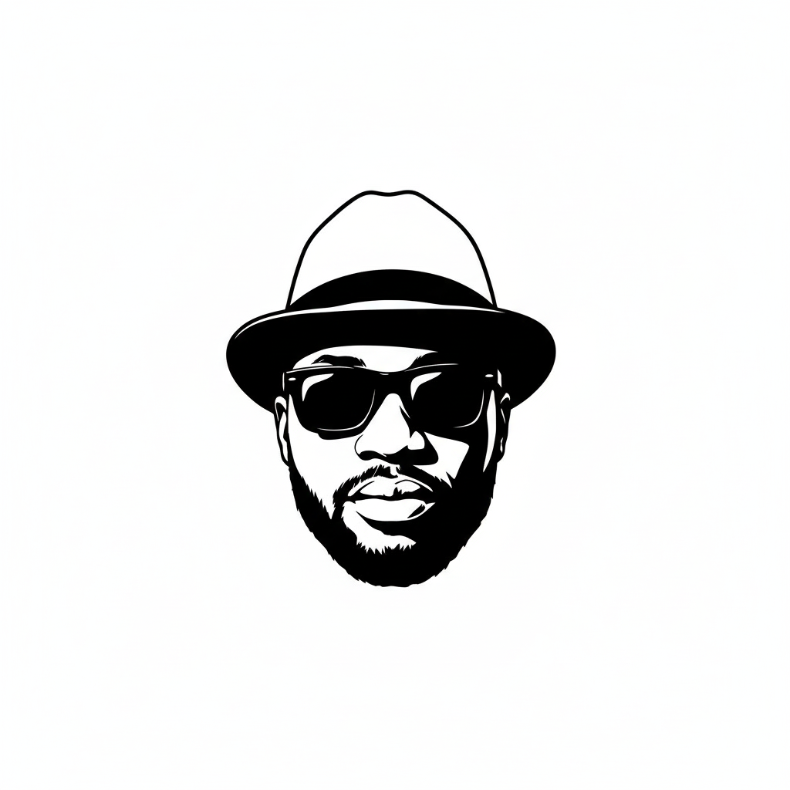

PhD · BSc (Hons) · Higher Statistical Data Scientist
Data Scientist. Scholar. Builder. I work at the intersection of machine learning, statistical science, and personal mastery — helping institutions make sense of data and helping men master their money, mindset, and masculinity.

I'm Derrick Ovunda Njobuenwu, PhD — a UK-based Nigerian data scientist, machine learning engineer, and former academic researcher. Born in Rivers State, Nigeria, I came to the UK on a Commonwealth Scholarship, earned my PhD from the University of Leeds focused on Computational Fluid Dynamics, and went on to publish extensively across nuclear engineering and fluid mechanics.
Today I work as a Higher Statistical Data Scientist at the Office for National Statistics (ONS), delivering AI and ML solutions at scale — including a 40× performance improvement on the UK's GDP estimation pipelines. I lead, build, and mentor across cloud platforms, big data, and agentic AI systems.
Beyond the data lab, I've built a growing community under the @donadviser handle — dedicated to helping men master their money, mindset, and masculinity. I believe rigorous thinking and disciplined character are the foundations of real wealth.
I am a member of the Institute of Physics, IChemE, NSE/COREN, and the UK Fluids Network. I hold certifications in Azure AI, AWS Cloud, Neural Networks, and AI Fairness.
Large Eddy Simulation (LES) of microbubbles, inertial fibres, and particles in turbulent pipe and channel flows. Modelling agglomeration, deposition, and separation dynamics.
EPSRC/DISTINCTIVE-funded work on mobilisation and transport of nuclear sludge in legacy ponds. Direct collaboration with Sellafield Ltd and multiple UK universities.
MPI-based LES-LPT codes, OpenFOAM RANS simulations, and Discrete Element Methods (DEM). Focus on thermo-fluid engineering and multi-phase flows.
Helping men deconstruct the path to wealth and personal power.
Beyond the data lab, I've built a growing online community rooted in the belief that true wealth is built on character, discipline, and long-range thinking. Every day I share real insights on the habits and principles that separate those who drift from those who build — drawn from the same rigour I apply to science.
Wealth-building frameworks, financial clarity, and long-term investment thinking for men serious about financial freedom.
Discipline, clarity, patience, and long-term thinking. The mental architecture that underpins every achievement.
Identity, purpose, and character. Becoming a man of substance — grounded in values, led by principles.
"Discipline is not a prison. It is the only door to freedom that actually opens from the inside. Most men are standing at locked doors, waiting for permission. Stop waiting."
Published across leading international journals in fluid mechanics, chemical engineering, and multiphase flow. Key contributions include fundamental studies on turbulent transport of inertial particles, microbubbles, and fibres with direct industrial relevance to the nuclear sector.
Whether you want to collaborate on a data science project, discuss AI/ML research, invite me to speak, or join the journey of building a better life — I'd love to hear from you.
derrick@donadviser.com